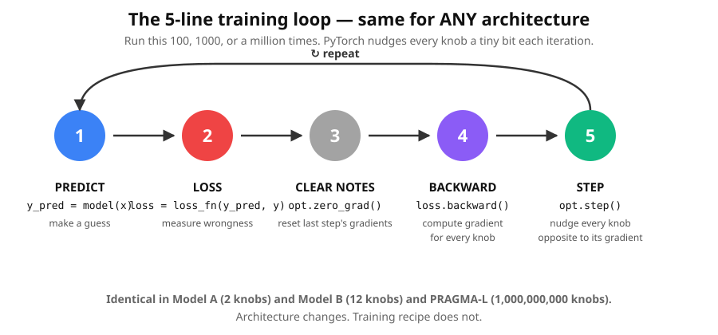

Lesson 1b — Architecture vs. training
The single most important distinction to internalise. Get this right and the rest of the course clicks.
Sections
If after Lesson 1 you're wondering "OK, but where exactly does the learning happen in a Transformer? Are the embeddings given or calculated? Is attention learned?" — this lesson is for you.
Idea Two ideas, separated

Why Why this matters
When we built Lesson 2's embedding table, the numbers were random — because we never ran the training loop on them. The architecture was in place (the table existed and the lookup worked), but no training happened, so the knobs stayed at random.
When we did Lesson 3's attention, we just showed the mechanism and hand-fed numbers. Again, no training.
In Lesson 4 we'll combine architecture (embedding + attention) with training (the 5-line loop). The training loop nudges every knob in the architecture — the embedding numbers, the attention matrices, the output layer — all at once.
Compare Two tiny models, one training recipe
course/aside/model_A_linear.py and model_B_embedding.py.
Model A — Linear regression (2 knobs)
w = torch.tensor(0.0, requires_grad=True)
b = torch.tensor(0.0, requires_grad=True)
# training loop nudges w, b → 2 and 1Model B — Embedding + linear classifier (15 knobs)
emb = nn.Embedding(3, 2) # 3 animals × 2 dims = 6 knobs
head = nn.Linear(2, 3) # 2*3 weights + 3 biases = 9 knobs
# training loop nudges EVERY one of those 6 + 9 = 15 knobsLoop The 5-line loop, identical for both

Evolve Watch the embeddings evolve
This is the magic: nobody designs where each word lives in embedding space. The training loop drifts them into the right positions automatically.

What changes between Model A, Model B, and a Transformer?
| Model | Architecture | Knobs | Loss |
|---|---|---|---|
| Model A | y = w·x + b | 2 | MSE |
| Model B | id → emb → linear | 15 | Cross-entropy |
| Lesson 4 toy | emb → attention → FFN → out | ~5,000 | Cross-entropy |
| PRAGMA-Large | (same as above, much bigger) | 1,000,000,000 | Cross-entropy |
The training loop is identical for all four. loss.backward() computes gradients for every knob, no matter how many; opt.step() nudges them all.
TL;DR Three things to remember
- Architecture says WHAT the model computes. Pipeline of math and how many knobs.
- Training says HOW the knobs get tuned. The same 5-line loop, no matter the count.
- The embedding table is part of the architecture — a layer with trainable knobs.
- Embeddings are LEARNED, not given. They start random and drift to meaningful positions during training.